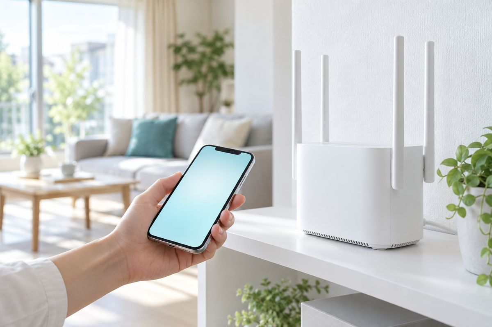

いちばんの得意分野
インターネット・Wi-Fi
つながらない、遅い、すぐ切れる。原因を切り分けて、家中で快適につながる環境にします。
世田谷区のインターネット・パソコンサポート
Wi-Fiがつながらない、遅い、すぐ切れる。
世田谷区のご家庭と事業所へ、原因の調査から設定の見直しまで、まるごと対応します。
こんな症状、ありませんか？
ひとつでも当てはまったら、世田谷区の Studio33 へ。
ネットが不調になる主な原因
設定が合っていない、機器が古くて今の通信に追いついていない。
壁や床、家電の影響で、部屋によって電波が届きにくくなっている。
パソコンやスマホ、テレビなど、機器の数や設定が原因のことも。
家の外の回線や契約内容が、速度の上限になっている場合も。

ネットの「つながらない」、世田谷区ならお任せください。
相談してみるサービス
いちばんの得意はネットの不調ですが、パソコンまわりのことならなんでもご相談ください。
つながらない、遅い、すぐ切れる。原因を切り分けて、家中で快適につながる環境にします。
新しいパソコンの初期設定から、メール・プリンター・よく使うソフトの準備まで。
起動しない、動作が遅い、エラーが出る。原因を調べて、状況に合った直し方をご提案します。
写真や書類、メールを新しいパソコンへ。大切なデータを守る仕組みも整えます。
ウイルス対策、パスワードの管理、怪しいメールへの備え。安心して使える設定に。
基本操作から仕事で使うソフトまで。お客さまのペースで、分かるまでご説明します。
よくあるお困りごと
インターネット・Wi-Fi
ネット・Wi-Fiの不調診断 3,300円〜
パソコン
トラブル診断 3,300円〜
パソコン
トラブル診断 3,300円〜
よくあるご相談をもとにした例です。料金は税込・世田谷区内は出張費込みです。
世田谷区の対応エリア
Studio33 は、世田谷区のご家庭と事業所を中心にサポートしています。地元だから、気軽に相談できる。困ったときに思い出してもらえる存在を目指しています。
三軒茶屋・太子堂・若林・世田谷・松陰神社前・上町・桜新町・用賀 など
下北沢・代沢・池尻・梅ヶ丘・豪徳寺・松原・明大前 など
二子玉川・等々力・尾山台・九品仏・奥沢・駒沢・深沢・上野毛 など
成城・祖師ヶ谷大蔵・千歳船橋・経堂・砧・喜多見 など
千歳烏山・芦花公園・八幡山・上北沢・給田 など
世田谷区の5つの地域すべてに対応しています。区外の方も、まずはお気軽にご相談ください。
選ばれる理由
ルーター、電波、つないでいる機器、回線。原因を順番に切り分けて、根本から直します。
世田谷区を中心に活動しているから、相談しやすく、困ったときにまた頼れます。
何が起きていて、何をするのか。作業の前に、分かりやすい言葉でお伝えします。
お客さまの声
インターネットの開通日に、設定のしかたが分からず途方にくれていました。そんなときに Studio33 さんを見つけて相談したところ、すぐに対応していただき、その日のうちにインターネットが使えるようになりました。本当に助かりました。心から感謝しています。
ご本人の了承をいただいて掲載しています。
ご利用の流れ
フォームかメールで、症状をそのままお送りください。うまく説明できなくても大丈夫です。
内容を確認し、考えられる原因と対応の方法をご案内します。
ご納得いただいてから作業します。終わったあとの使い方もご説明します。
お問い合わせ
下のフォームに、お困りごとをそのままご記入ください。
うまく説明できなくても大丈夫です。
メールで直接ご相談の方は studio33corp@gmail.com まで
毎朝7時に新作
テレビがネットにつながらない？接続先を確認｜世田谷区
動画は社内ツール「Short movie」で作成し、当社のYouTubeチャンネルへ投稿しています（プライバシーポリシー・利用規約）。